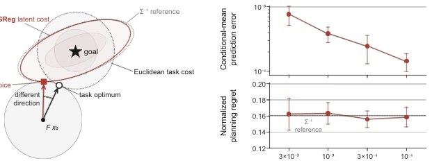
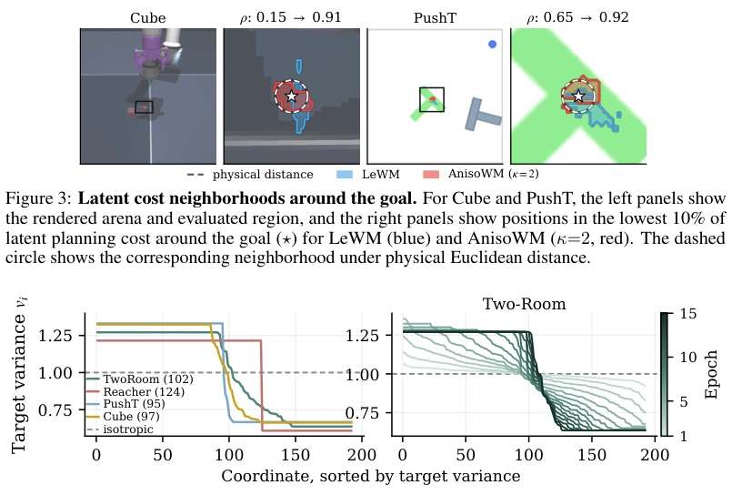
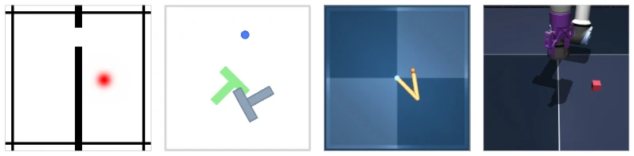
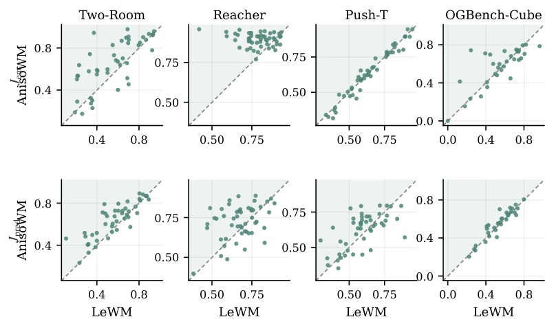
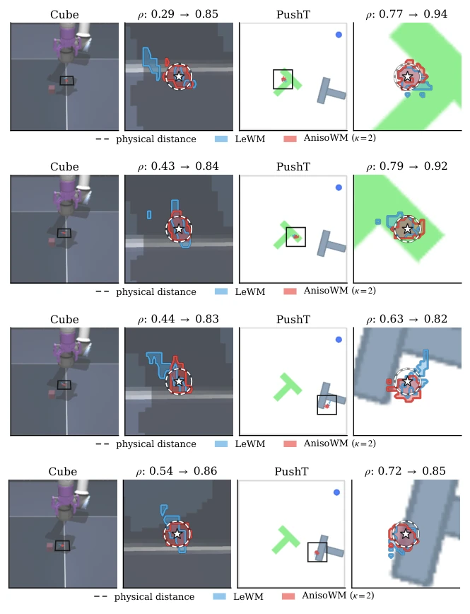
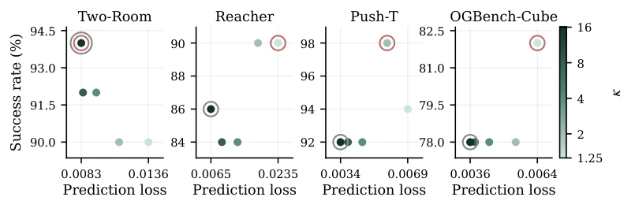
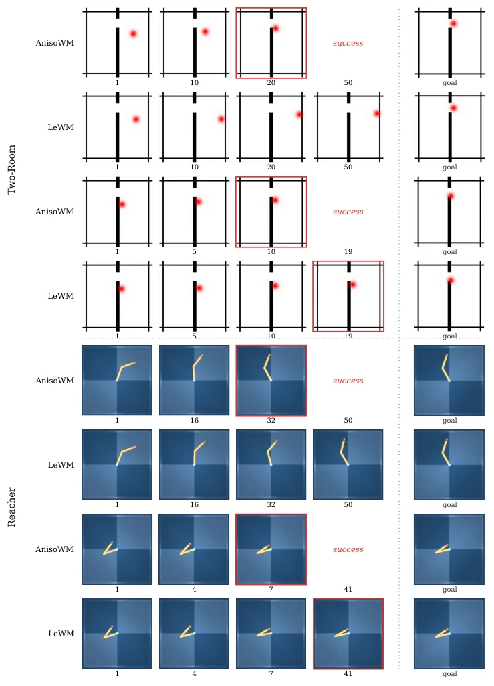
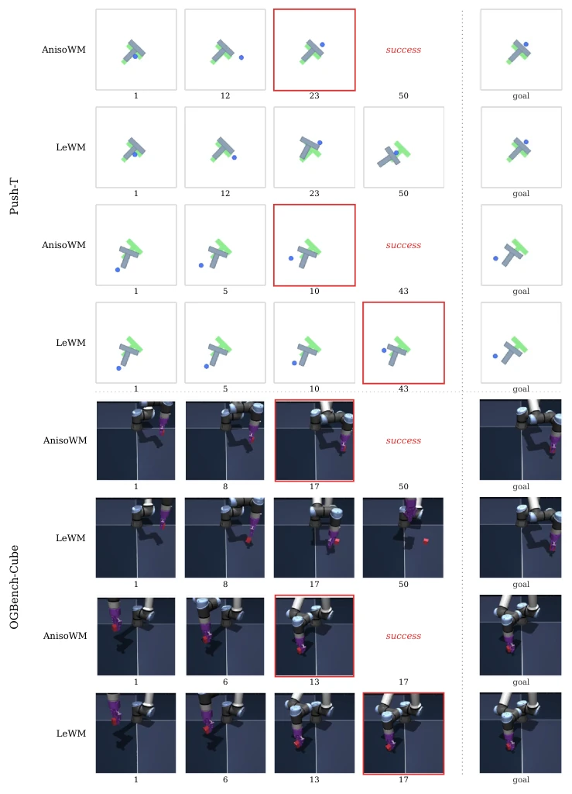
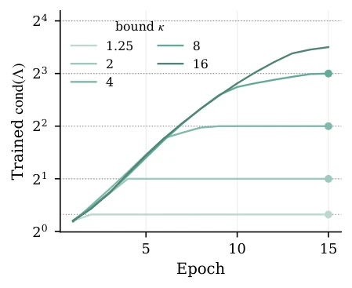
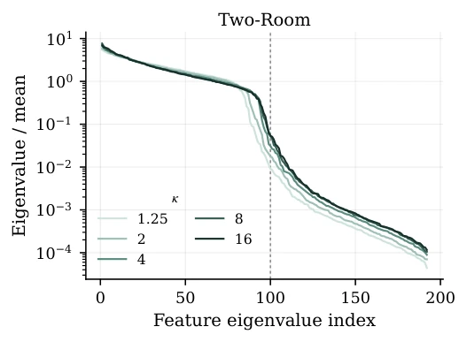

This paper pours cold water on JEPA world models: merely making predictions accurate and preventing feature collapse does not guarantee planning success. The authors sharply point out that the isotropic Gaussian regularization (SIGReg) used by mainstream methods like LeWM, while making feature distributions look "pretty", distorts the planning geometry into inverse covariance weighting, leading to the fact that when balancing errors in different directions, the "optimal" action selected by the model is actually terrible in physical space. AnisoWM attempts to correct this "geometric mismatch" by introducing learnable anisotropic targets, and experiments indeed show improved success rates in four environments. But the criticisms are also obvious: this improvement essentially "excavates" within the regularization term, with zero modifications to the predictor and planner architecture, belonging to an optimization of "changing the soup but not the medicine"; and sensitivity analysis of the anisotropy degree (κ) shows the effect is not monotonic, implying hyperparameter tuning might be more metaphysical than theoretical derivation. Overall, it is a "fine-tuning" work with solid theory but limited engineering gains, do not expect it to solve all planning problems.
研究动机Motivation
JEPA类世界模型（如LeWorldModel, LeWM）通过预测潜在空间动态进行规划，通常使用欧氏距离作为代价函数。然而，LeWM（Maes et al., 2026）采用的SIGReg正则化强制特征服从各向同性高斯分布，这虽然防止了坍塌，却隐含地引入了逆状态协方差（Σ⁻¹）的度量权重。论文分析表明，当任务代价函数（如欧氏距离）与这种隐式度量不一致时，即使预测完全准确，规划器也会因为错误地权衡不同方向的误差而产生“规划遗憾”（Planning Regret）。例如，在需要平衡高方差和低方差方向的任务中，各向同性正则化会过度惩罚低方差方向的误差，导致规划失败。现有工作如LeWM、DINO-WM（Zhou et al., 2025）和V-JEPA（Assran et al., 2025）均未显式优化这种规划几何，导致预测目标与规划目标错位。本研究旨在解决这一几何错配问题，证明各向同性正则化并非规划友好的最优解。
JEPA-like world models (such as LeWorldModel, LeWM) perform planning by predicting latent space dynamics, typically using Euclidean distance as the cost function. However, the SIGReg regularization adopted by LeWM (Maes et al., 2026) forces features to follow an isotropic Gaussian distribution; while this prevents collapse, it implicitly introduces metric weights of inverse state covariance (Σ⁻¹). The paper analysis indicates that when the task cost function (such as Euclidean distance) is inconsistent with this implicit metric, even if predictions are completely accurate, the planner will produce "Planning Regret" due to incorrectly weighting errors in different directions. For example, in tasks requiring balancing high-variance and low-variance directions, isotropic regularization will over-penalize errors in the low-variance direction, leading to planning failure. Existing works such as LeWM, DINO-WM (Zhou et al., 2025), and V-JEPA (Assran et al., 2025) do not explicitly optimize this planning geometry, resulting in a misalignment between prediction objectives and planning objectives. This study aims to solve this geometric mismatch problem, proving that isotropic regularization is not the optimal solution for planning-friendly approaches.

Figure 1: Prediction–planning separation with a nonlinear encoder. (a) The Euclidean task cost and the SIGReg latent cost select different outcomes from the same reachable set; the learned latent geometry closely follows the Σ−1 reference. (b) As process noise decreases, held-out conditional- mean prediction error decreases while normalized physical planning regret remains nearly unchanged. Points and error bars show the mean and 95% t-confidence interval over ten training seeds.
The core idea of AnisoWM is to replace the fixed isotropic Gaussian target in SIGReg with a learnable diagonal covariance matrix Λ, while keeping the predictor architecture and Euclidean planner unchanged. The overall process is divided into two stages: training and planning; the training stage jointly optimizes the encoder, predictor, and target covariance Λ; the planning stage only uses the trained encoder and predictor for standard latent space rollout and Euclidean distance minimization. Specific innovations include: 1. Learnable Gaussian Target: Define Λ as a diagonal matrix, constrain its trace to be fixed at dimension D, and limit the condition number κ to control the degree of anisotropy. This allows variances of different latent dimensions to be learned differentially, rather than being forced to be equal. 2. Regularization Redefinition: Introduce Λ⁻¹/² in the SIGReg statistic to standardize features, so that the regularization term can guide the feature distribution to match the learned anisotropic target, rather than the isotropic target. 3. Geometric Compensation Mechanism: Theoretical analysis proves that this learned Λ can cancel out the inverse covariance weighting effect brought by isotropic regularization, making the Euclidean distance in latent space closer to the true task cost in physical space, thereby reducing planning regret. 4. Parameterization Strategy: Ensure Λ satisfies trace and condition number constraints through exponential mapping and truncation, and update only during training, without increasing inference overhead.
Experiments are conducted in four visual control environments: TwoRoom, Reacher, PushT, and Cube, based on LeWM settings. Baselines include LeWM (κ=1), PLDM, DINO-WM, etc. Main metrics are planning success rate (Success Rate) and ranking consistency between latent cost and task outcomes (Ranking Accuracy). Results show that AnisoWM (κ=2) outperforms LeWM in all four environments, for example, TwoRoom improved from 87% to 93%, PushT from 74% to 79%. Ranking consistency analysis (Table 1) indicates that AnisoWM's latent cost better reflects true task outcomes. Ablation experiments find that the anisotropy degree κ is not necessarily better when larger, there exists a non-monotonic relationship, and the learned target spectra (Target Spectra) differ significantly across different environments (Figure 4). Visualization analysis (Figure 3, Figure 8) shows that AnisoWM's low-cost regions are closer to physical Euclidean distance, verifying the effectiveness of geometric alignment.

Figure 4: Learned target spectra. Left: learned targets at κ = 2, sorted by variance, with the isotropic target marked. The trace and maximum variance ratio are fixed, while the allocation is learned; the legend shows the number of coordinates above the mean variance. Right: target spectrum during one TwoRoom run, showing continued evolution after the condition-number bound is reached.

Figure 6: Evaluation environments. From left to right: TwoRoom, PushT, Reacher, and Cube. All four environments have continuous action spaces, and visual goal planning is performed directly from image observations.

Figure 7: Ranking accuracy, pair by pair. Each point is one initial–goal pair: how well LeWM’s cost orders its sequences on the horizontal axis against how well AnisoWM’s does on the vertical one, both scoring the same sequences. The shaded half-plane above the diagonal is where AnisoWM orders that pair better. Top row: Jenc, which leaves the representation on its own. Bottom row: Jpred, the cost the planner minimizes. Rows of a column share their axis limits; each panel shows the seed Table 1 reports.

Figure 8: Additional latent-cost neighborhoods around the goal. Four additional Cube/PushT example pairs, shown using the same visualization as Figure 3. The dashed circle denotes the task-cost neighborhood in physical space; blue and red contours denote the lowest-cost regions under LeWM and AnisoWM (κ = 2), respectively.

Figure 11: Latent prediction loss and planning success. One marker per trained run, coloured by its anisotropy bound. A run further left predicts better and a run higher plans better. The red ring marks the best-planning run and the grey ring the lowest-loss one; where a single run is both, the two rings are concentric. The MSE is measured in each model’s own learned representation space.

Figure 12: Rollouts in TwoRoom and Reacher. Two rollout pairs per environment compare AnisoWM at κ = 2 with LeWM under the same evaluation planner and seed. Columns show the indicated environment steps and the goal observation; red outlines indicate recorded goal attainment.

Figure 13: Rollouts in PushT and Cube. Two rollout pairs per environment compare AnisoWM at κ = 2 with LeWM under the same evaluation planner and seed. Columns show the indicated environment steps and the goal observation; red outlines indicate recorded goal attainment.
其他图片Other Figures

Figure 9: Evolution of the learned target condition number. Each curve shows one TwoRoom training run with the indicated anisotropy bound, and the dotted line at each bound is the ratio that bound permits. Filled markers indicate that the learned target reaches its bound.

Figure 10: Measured feature-covariance spectra in TwoRoom. Eigenvalues of the centered feature covariance are normalized by their mean and sorted independently for each displayed anisotropy bound; the dashed line marks index 100, the value quoted in the text. These empirical feature covariances are distinct from the learned target covariance Λ.